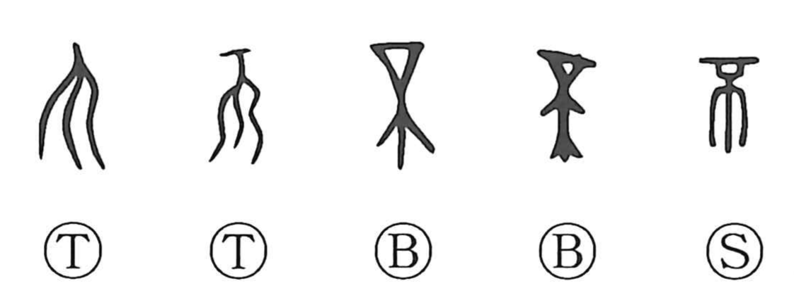

Explanation
不 originally pictures the supporting calyx at the base of a flower. This botanical meaning survives only occasionally because the graph was borrowed very early to write a negative word. Its familiar ‘not’ is consequently a sound-loan use.
The flower's development also gives a series of related shapes. A swelling growth produces 丕 and 否; the mature fruit becomes 咅, and its splitting is expressed in 剖. The family connects growth, swelling, and division, while the borrowed negative use follows a separate course.
Bronze inscriptions can use 不 where 丕, ‘greatly,’ would later be written. A phrase containing 不 is therefore not automatically negative. The particular word and its context determine whether the writing expresses negation, greatness, or one of the related forms.